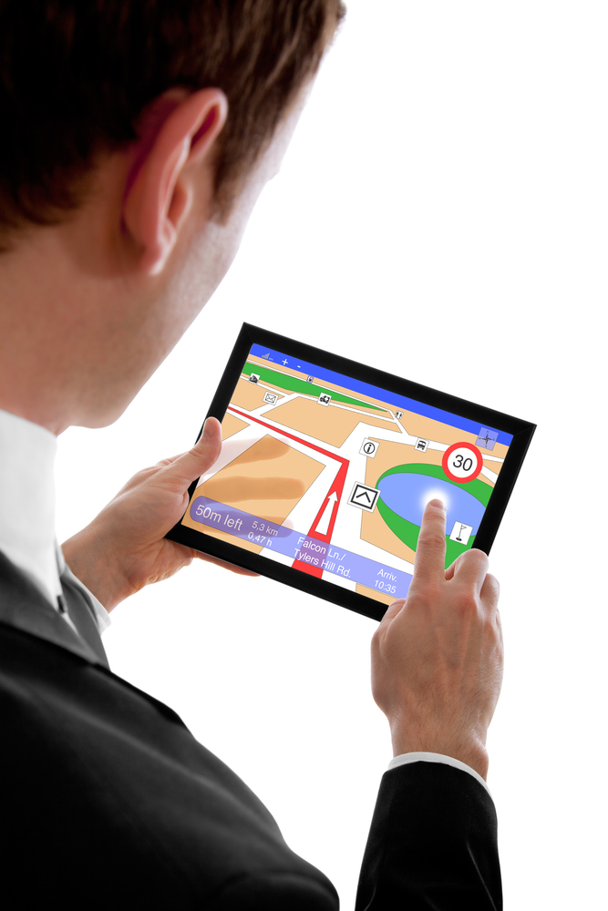

¿Qué es fasTrack?
fasTrack es un sistema de localización satelital que utiliza herramientas de posicionamiento global (GPS) y mapas digitalizados para una medida de nuevas soluciones tecnológicas y de información para fortalecer la supervisión, seguridad, y control de los recursos móviles de una empresa.
Con fasTrack usted podrá saber en todo momento en donde se encuentran sus recursos móviles. fasTrack da seguimiento a cualquier tipo de vehículo terrestre, aéreo, o marítimo.
El sistema de localización automatizada de vehículos (AVL) de fasTrack, trabaja recibiendo coordenadas del sistema satelital militar “GPS”, el cual ha sido habilitado para el uso comercial. Estas coordenadas recibidas son procesadas por un “receptor –modem” instalados en el vehículo y transmitidas a un centro de gestión para determinar la localización exacta del móvil.
El seguimiento de la información es dada de manera continua e inalámbrica a través de la red de repetidoras estableciendo cobertura a lo largo y ancho del país. El entorno tecnológico y de comunicaciones permite la posibilidad de la continua supervisión de los vehículos y su localización a través de consultas y/o la activación de alarmas al detectar algún evento irregular.
La información recibida en nuestro centro de gestión es procesada por un sofisticado “software” que permite al usuario el despliegue de los móviles en una pantalla de computadora sobre un mapa nacional digitalizado, efectivamente diseñado para satisfacer una gran variedad de requerimientos. Los usuarios podrán revisar, según sus necesidades, todo tipo de información acerca de sus vehículos a través de Internet, o nuestro centro de gestión en Kadair que opera 24 horas al día.
Acerca de Nosotros
fasTrack, S.A. es una empresa líder en tecnología de Sistemas de Localización Satelital en Panamá, con más de 7 años atendiendo las necesidades de nuestros clientes con un alto grado de responsabilidad, garantía de servicio y productos de alta calidad.
Misión
Servir a nuestros clientes con productos y servicios utilizando herramientas de posicionamiento global y tecnología GSM para localización de sus recursos móviles, que faciliten la operación de sus empresas y las hagan más productivas. Teniendo como meta la total satisfacción con los servicios que prestamos, la garantía que ofrecemos y la atención de nuestro personal que se desempeña con el mayor profesionalismo y sentido de responsabilidad.
Visión
Ser una compañía líder en el mercado de localización satelital, integrando tecnología de punta para brindar a nuestros clientes soluciones integradas para satisfacer sus necesidades con productos y servicios de alta calidad, con el fin de adquirir la total satisfacción del cliente.
